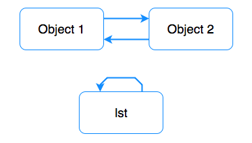

介绍Python3.6的垃圾回收机制 garbage-collector
通常来说，对于Python这种高级别的语言，开发者完成可以不用关心其内部的垃圾回收机制。相辅相成的通过学习Python内部的垃圾回收机制，并了解其原理，可以使得开发者能够更好的写代码，更加Pythonista.
和C，C++不同Python这种高级语言，对内存的管理，分配和释放有独特的机制，即对于小对象(<=512bytes)使用内存池模型进行管理，即当对象被回收时，不会将内存归还给操作系统，而是将内存归还给对应的内存池中，对于大对象(>512bytes)则使用标准C allocator的方式进行内存的分配和管理。
如果想要详细了解Python的内存管理机制，请参考Python内存管理一文. 这里不多做赘述。
标准CPython实现的垃圾收集器有两部分组件构成，一部分为引用计数模块(reference counting collector), 另一部分为分代垃圾回收器(generational garbage collector)。
引用计数算法简单有效直接，但是不能检测到循环引用的问题。这也就是Python有补充GC算法分代循环GC算法(generational cyclic GC)的原因.
引用计数算法是最简单的垃圾回收算法即对象当没有引用指向时，会被回收(deallocated).
在Python中每一个对象，甚至是int都有一个引用(pointer)指向该对象，为了保持对每个对象引用的跟踪，Python对象额外维护了一个reference count的变量来自增或自减，用来标识当前对象是在copy复制或者被delete删除。
对Python对象进行如下操作可以导致该对象的引用计数自增
assignment operatorargument passingappending an object to a list当对象的引用计数变量变为0时，CPython将会自动的调用该对象特定的回收方法object-specific deallocation function。
获取对象的引用计数可以通过sys.getrefcount方法
xfoo = []# 2 references, 1 from the foo var and 1 from getrefcountprint(sys.getrefcount(foo))def bar(a): # 4 references # from the foo var, function argument, getrefcount and Python's function stack print(sys.getrefcount(a))bar(foo)# 2 references, the function scope is destroyedprint(sys.getrefcount(foo))标记清除算法主要有两段操作构成，即标记(Mark),清除(Sweep)。
标记：即从根节点出发检测所有不可达的节点对象，通常是DFS的遍历。如下是伪代码。root即为根节点，markedBit为获取和修改当前节点的标记位。
Mark(root) If markedBit(root) = false then markedBit(root) = true For each v referenced by root Mark(v)清除：顾名思义，就是清除标记中不可达的节点。通常就是遍历所有堆内存的对象并将未被标记的节点进行回收。伪代码如下：
xxxxxxxxxxSweep()For each object p in heapIf markedBit(p) = true thenmarkedBit(p) = falseelseheap.release(p)
优缺点：
标记清除算法的优点在于可以解决循环引用的问题，并且在整个算法执行的过程中没有额外的开销。
标记清除算法的最主要缺点在于正常的程序将会被阻塞，当执行标记清除时。另外一个缺点在于，标记清除算法在执行很多次数，在程序的堆空间会产生一些小的内存碎片, 如下图所示。
当经典的引用计数无法处理循环引用问题时，即出现下图所示场景时，出现循环引用，或者自引用，分代回收的算法就登场了。 分代回收算法是基于 标记清除(Mark and Sweep).

如下代码即展示了分代垃圾回收的机制：
gc.disable() : 手动关闭分代垃圾回收gc.collect()打印1, 1。即循环引用计数。gc.collect()时，打印0，0.xxxxxxxxxximport gc# We are using ctypes to access our unreachable objects by memory address.class PyObject(ctypes.Structure): _fields_ = [("refcnt", ctypes.c_long)]gc.disable() # Disable generational gclst = []lst.append(lst)# Store address of the listlst_address = id(lst)# Destroy the lst referencedel lstobject_1 = {}object_2 = {}object_1['obj2'] = object_2object_2['obj1'] = object_1obj_address = id(object_1)# Destroy referencesdel object_1, object_2# Uncomment if you want to manually run garbage collection process # gc.collect()# Check the reference countprint(PyObject.from_address(obj_address).refcnt)print(PyObject.from_address(lst_address).refcnt)与经典的引用计数不同的是，引用计数是实时工作的，而分代垃圾回收是定期工作的。
首先GC分类器将对象分成3个不同代，每个新创建的对象属于第一代。每当对象在某代的的垃圾回收中存活下来时，则将该对象移动至下一代。较低的代会更加频繁的进行垃圾回收，(大部分对象在被创建后很快就会消亡)。分代垃圾回收提高了GC的性能，并降低了GC暂停时间。
为了决定在什么时候去执行分代垃圾回收，每一代都有各自独立的counter和threshold，counter为分配内存的对象数量减去上一次分代垃圾回收的数量。每次创建一个新的对象时，counter++，CPython就会检查counter是否达到了阈值，如果达到了阈值，则进行该代的垃圾回收。
在标准Python 3.6版本中通过gc.get_threashold函数可以获得每代的阈值。(700, 10, 10)。